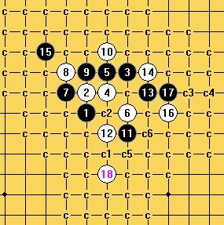
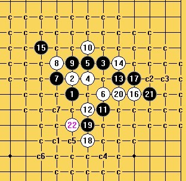

疏星四打必败的19
#1 疏星四打必败的19 作者：山城刀客 发表时间：2012-3-27 18:23:02
刚才在三手一下了一局上图这个局面，19必败，有兴趣的朋友可以拆拆看。（实际上这个17已经是必败了！）
［此帖子已被 山城刀客 在 2012-3-27 18:53:07 编辑过］
［ 冰雪笑醉 于 2012-3-28 15:24:47 时花20金币送鲜花一朵］
［ 冰雪笑醉 于 2012-3-28 15:24:53 时花20金币送鲜花一朵］
#2 Re:疏星四打必败的19 作者：賢周 发表时间：2012-3-27 20:18:04
［ 山城刀客 于 2012-3-27 21:01:36 时花20金币送鲜花一朵］
［ 山城刀客 于 2012-3-27 21:04:45 时花20金币送鲜花一朵］
#3 Re:山城刀客【==疏星四打必败的19==】 作者：逆刃 发表时间：2012-3-27 20:30:00
实际上这个杀路线很明确，黑棋没有进攻手段，白棋只需要一直做杀就行了，胜法可能不只一种，扫地毯稍微有点小麻烦。


 疏星败17.rar
疏星败17.rar［ 山城刀客 于 2012-3-27 21:10:59 时花20金币送鲜花一朵］
［ 山城刀客 于 2012-3-27 21:15:29 时花20金币送鲜花一朵］
［ 冰雪笑醉 于 2012-3-28 15:22:59 时花20金币送鲜花一朵］
［ 冰雪笑醉 于 2012-3-28 15:25:03 时花20金币送鲜花一朵］
#4 Re:疏星四打必败的19 作者：知布 发表时间：2012-3-27 21:46:55
想问一下这个 15 有没有必败
11 之后黑有没有更好的下法
#5 Re:疏星四打必败的19 作者：自来水 发表时间：2012-3-27 22:18:09
 黑石定式库...
黑石定式库...
#6 Re:疏星四打必败的19 作者：梦石 发表时间：2012-3-28 15:02:25
谢谢分享
#7 Re:知布【==Re:疏星四打必败的19==】 作者：冰雪笑醉 发表时间：2012-3-28 15:42:18
引用：
原文由 知布 发表于 2012-3-27 21:46:55 :想问一下这个15有没有必败
11之后黑有没有更好的下法
 这个15貌似没有必败，黑11下法挺多~
这个15貌似没有必败，黑11下法挺多~
但偶也不知道哪最强，高手赐教~
#8 Re:疏星四打必败的19 作者：冰雪笑醉 发表时间：2012-3-28 15:47:15

［ 山城刀客 于 2012-3-28 20:23:01 时花20金币送鲜花一朵］
#9 Re:疏星四打必败的19 作者：流天类星 发表时间：2012-3-31 3:25:10